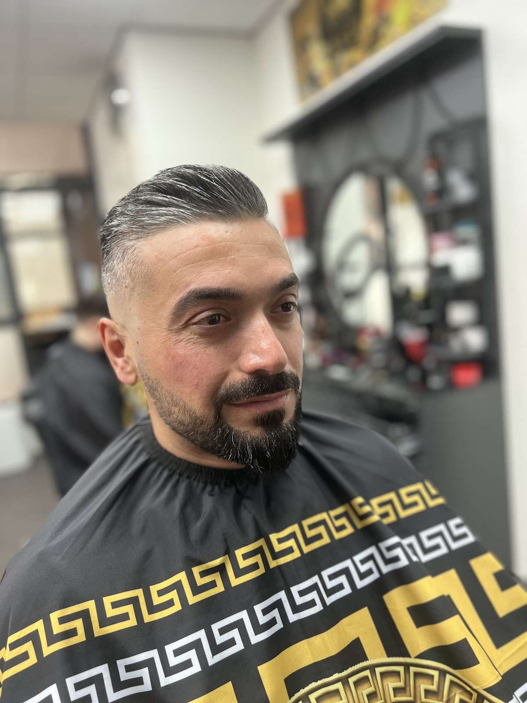
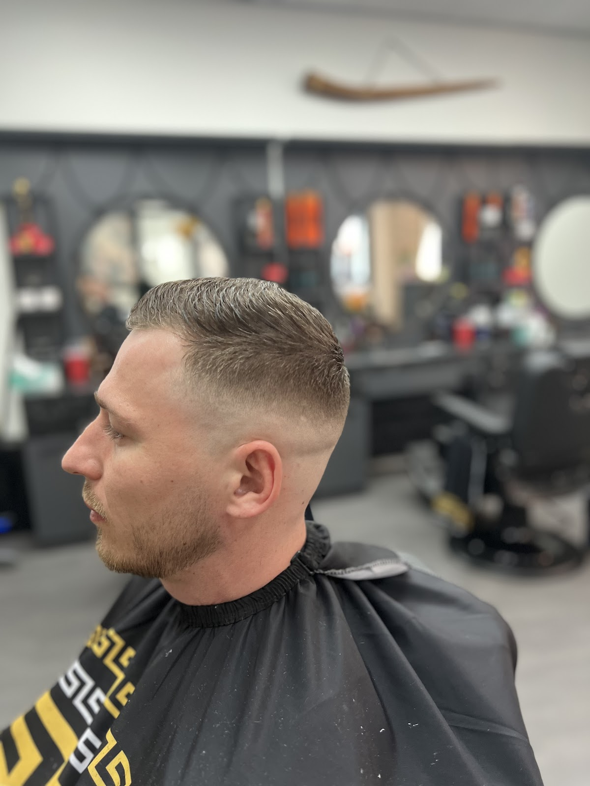
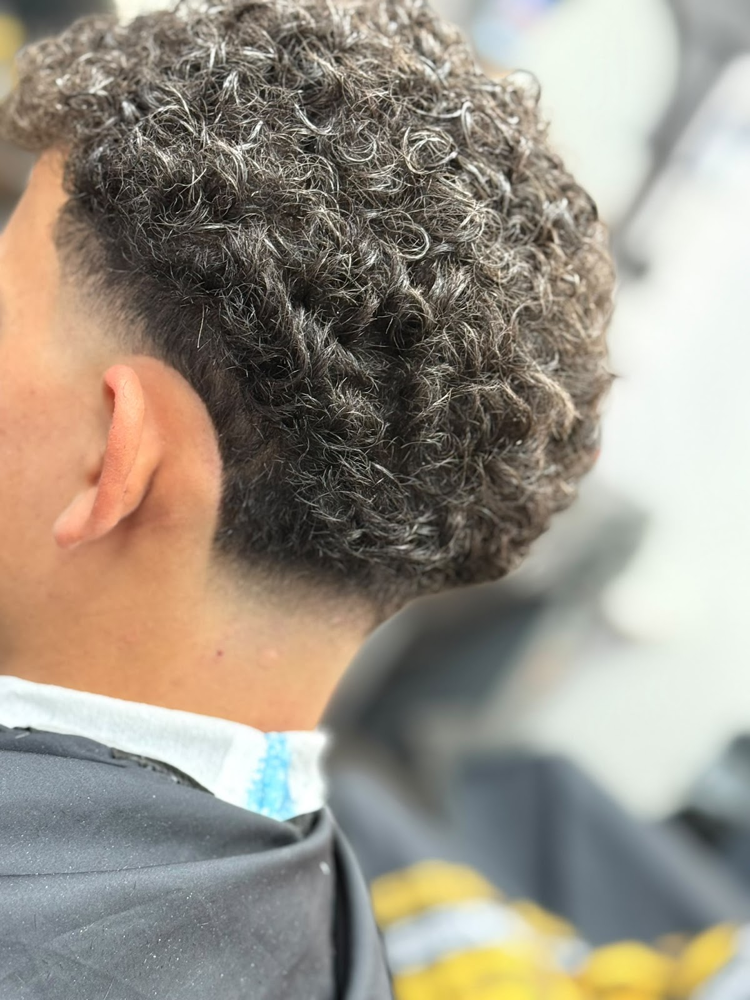
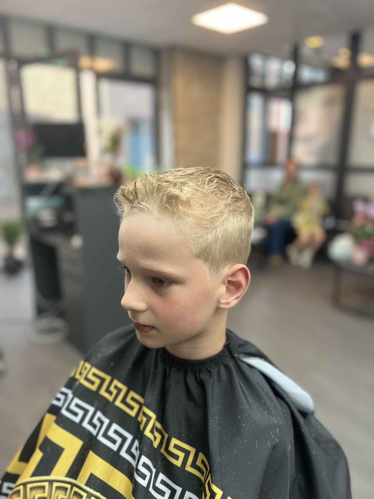
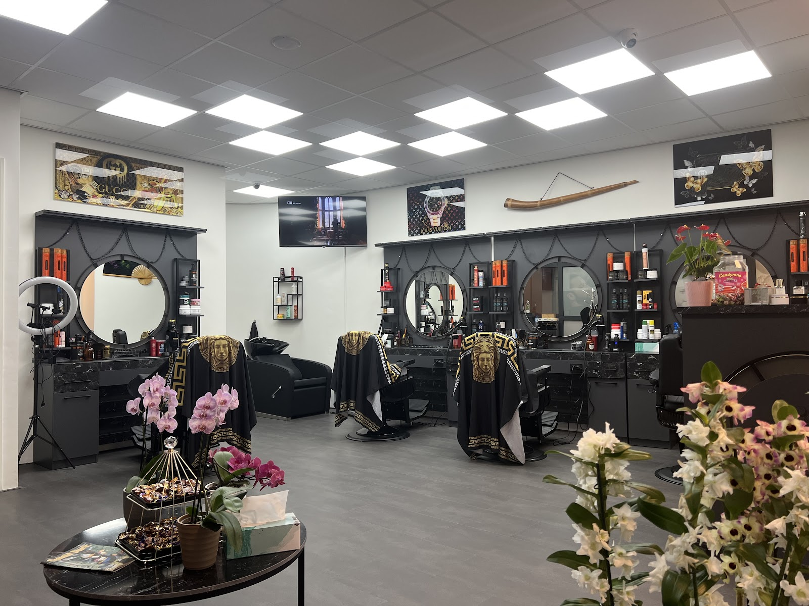
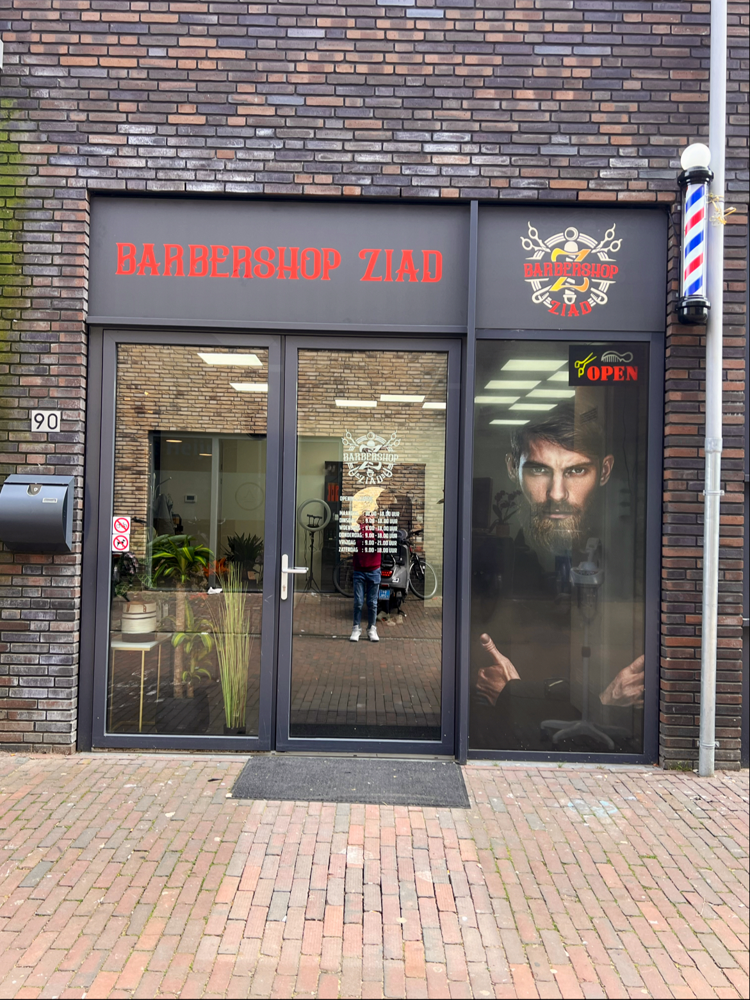

Grotestraat 90, Ede
Loop gewoon binnen.
Geen afspraak nodig. U krijgt iets te drinken, neemt plaats in de stoel en vertelt wat u wilt. Wij luisteren, en nemen de tijd voor een knipbeurt of baard die klopt.

In de stoel
Klassieke kniptechniek en de laatste trends, met persoonlijke aandacht voor elke klant.
-
Klassieke knipbeurt
Een klassieke knipbeurt die stijl en persoonlijke aandacht combineert. Van een strakke fade tot een nette zijscheiding.
-
Baard trimmen
Baard trimmen op maat, zodat uw baard weer netjes en in model is.
-
Luxe scheerbeurt
Een luxe scheerbeurt voor de ultieme verwenning van de huid.
Vragen over een behandeling? Bel 06 45454544.




Meer dan een kapperszaak
Barbershop Ziad zit midden in Ede, aan de Grotestraat. Een plek waar traditie en moderne stijl samenkomen: onze barbiers combineren klassieke kniptechnieken met de nieuwste trends.
Persoonlijke aandacht staat voorop. U krijgt bij binnenkomst iets te drinken, en tijdens het knippen vragen we of het goed is zo.
Wat klanten zeggen
4,9 gemiddeld uit 182 Google-reviews
“Vandaag voor het eerst naar Barbershop Ziad geweest omdat het bij mijn eigen kapper ontzettend druk was. Bij binnenkomst werd ik vriendelijk begroet en werd er wat te drinken aangeboden. Ik kon meteen gaan zitten, de jongen die mij hielp luisterde goed naar mijn wensen en ook tussendoor werd er gevraagd of het goed was”
“Vandaag voor het eerst geweest, belde vantevoren of er ruimte was en kon gelijk komen.. van het moment dat ik binnen stapte meteen drinken aangeboden en mocht ik gaan zitten.. Kapper luisterde heel goed naar wat ik wilde en maakte er heel iets moois van! Zeker een aanrader”
“Kwam er voor het eerst, binnen zonder afspraak. Gelijk vragen wat ik wil drinken. Mocht in de stoel gaan zitten en wilde mijn baard weer netjes hebben. Nou geloof me, ze luisteren echt naar jou wensen [...] Super net gewerkt en ze nemen de tijd voor je.”
“Heel goede barbershop, heel liefe mensen, ik vind een van de beste kappers in ede”
Langskomen
Zonder afspraak welkom tijdens openingstijden. Op vrijdag knippen we door tot 21:00.
| Maandag | 10:00 tot 18:00 |
| Dinsdag | 09:00 tot 18:00 |
| Woensdag | 09:00 tot 18:00 |
| Donderdag | 09:00 tot 18:00 |
| Vrijdag | 09:00 tot 21:00 |
| Zaterdag | 09:00 tot 18:00 |
| Zondag | Gesloten |
